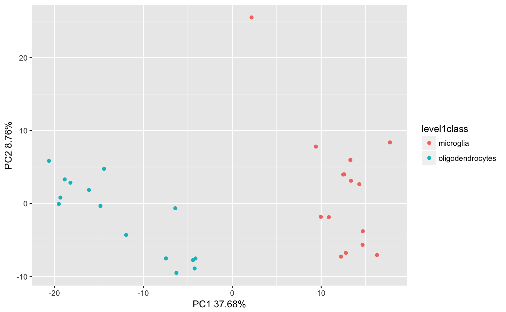

Use this function to plot PCA results
plotPCA(count_data, colorBy = "No Color", shape = "No Shape", pcX = "PC1", pcY = "PC2", reducedDimName = "PCA", runPCA = FALSE, use_assay = "logcounts")
| count_data | A SCE object |
|---|---|
| colorBy | The variable to color clusters by |
| shape | Shape of the points |
| pcX | User choice for the first principal component |
| pcY | User choice for the second principal component |
| reducedDimName | PCA dimension name. The default is PCA. The toolkit will store data with the pattern <ASSAY>_<ALGORITHM>. |
| runPCA | Run PCA if the reducedDimName does not exist. the Default is FALSE. |
| use_assay | Indicate which assay to use for PCA. Default is "logcounts" |
A PCA plot
data("GSE60361_subset_sce") plotPCA(GSE60361_subset_sce, colorBy = "level1class", reducedDimName = "PCA_counts")